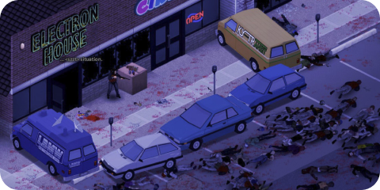
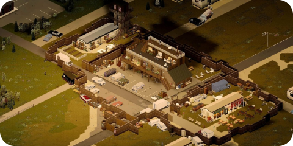

Project Zomboid é um jogo de sobrevivência e simulação de zumbis desenvolvido pela Indie Stone. Ambientado em um mundo pós-apocalíptico infestado de mortos-vivos, o jogo desafia os jogadores a sobreviverem o máximo possível em um ambiente hostil.
No jogo, os jogadores assumem o papel de um sobrevivente e precisam de recursos gerenciais essenciais, como comida, água e abrigo, enquanto evitam ou enfrentam zumbis famintos por carne. A ênfase na gestão de recursos torna o jogo altamente desafiador, na medida em que os jogadores precisam equilibrar suas necessidades básicas com o risco de encontros mortais.
Project Zomboid se destaca por sua jogabilidade de mundo aberto e pela profundidade de suas mecânicas de sobrevivência. Os jogadores constroem barricadas, plantam culturas, forjar armas e até mesmo podem interagir com outros sobreviventes, tornando cada sessão de jogo única e imprevisível.
A atmosfera sombria e a jogabilidade implacável para uma experiência imersiva e tensa. O jogo também oferece modos de jogo multiplayer, permitindo que os jogadores cooperem ou compitam pela sobrevivência em um mundo infestado de zumbis.
Project Zomboid cativa os fãs de jogos de sobrevivência com seu realismo implacável e desafios constantes, tornando-o um título cativante para aqueles que buscam uma experiência intensa e autêntica de sobrevivência em um apocalipse zumbi.
Informações adicionais:
Data de lançamento: 8 de nov, 2013
Developer: The indie stone.
Editora: The indie stone.
Marcadores do jogo: Aventura, Mundo aberto e Zumbi